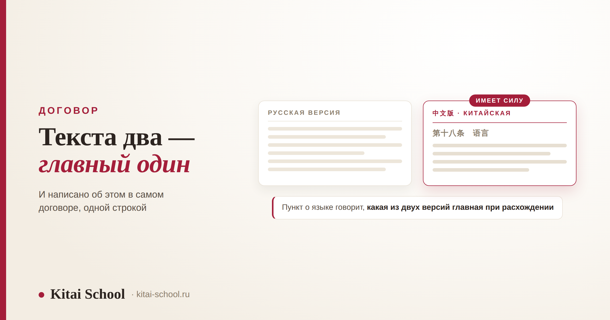
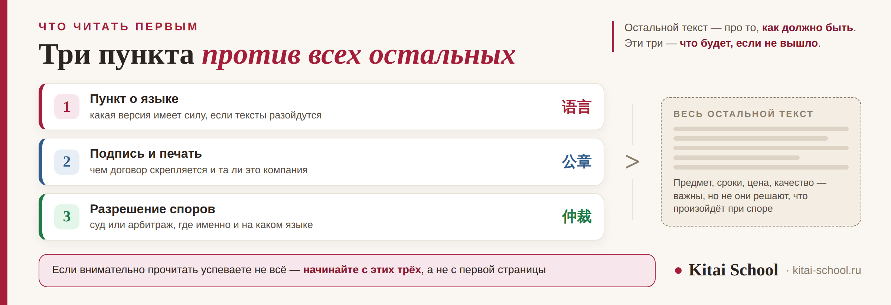

Китайский для работы
Юридический китайский язык: что читать в договоре первым и кому этот навык действительно нужен


Начнём с того, что обычно не говорят. Юридический китайский нужен не всем, кто работает с Китаем. Коммерсанту, закупщику, руководителю читать договор самому на чужом языке — не экономия, а лишний риск: мы так и пишем в разборе про китайский язык для бизнеса. Этот навык нужен тем, для кого текст договора и есть работа: юристам, которые ведут сделки с китайской стороной, и переводчикам, которые эти документы переводят. Статья — для них. И первое, что стоит принять: словарного запаса здесь мало.
В договоре не все пункты весят одинаково. Три из них решают больше, чем перевод всего остального текста: какая языковая версия имеет преимущественную силу, чем договор скрепляется (в китайской практике печать компании значит очень много) и где и на каком языке разрешается спор. Отдельная беда — пары близких терминов, у которых в словаре один русский перевод на двоих: самая известная из них читается одинаково и означает разное. И ещё: ссылки на отдельный Закон о договорах устарели — с 2021 года эти нормы живут в Гражданском кодексе.
Оговорка, без которой дальше нельзя. Это статья про язык, а не про право. Она о том, что читать и на что смотреть в тексте, а не о том, как оценивать сделку. Правовая оценка — работа юриста с китайской квалификацией, и заменить её чтением статьи нельзя.
Почему словарного запаса мало: три уровня чтения
Разница между «понимаю переговоры» и «читаю договор» не в объёме лексики. Это три разные задачи, и вторая не вырастает из первой сама.
| Уровень | Что на нём делают | Что подводит |
|---|---|---|
| Слова | узнают термины и понимают общий смысл абзаца | бытовое значение слова подставляется вместо терминологического |
| Формулы | видят устойчивые конструкции: вступление в силу, ответственность, форс-мажор | формулу переводят дословно и теряют то, что она значит целиком |
| Последствия | понимают, что изменится, если пункт сработает | пункт переведён правильно, но никто не заметил, что он вообще делает |
В переговорах вы понимаете смысл целиком и всегда можете переспросить. В договоре переспросить будет уже не у кого, а значение имеет каждое слово. Поэтому это не «деловой китайский посложнее», а отдельный навык чтения, который ставят на готовую базу. Про то, чем деловой китайский отличается от бытового и что в нём действительно нужно, — в разборе китайский язык для бизнеса; готовые фразы для встреч и переписки — в наборе китайский для делового общения.
Три пункта, которые весят больше остальных
Если времени мало и прочитать внимательно можно не всё, читают эти три. Они определяют, что произойдёт, когда что-то пойдёт не так, — а всё остальное описывает, как должно быть, когда всё идёт хорошо.
1. Какая языковая версия главная
Договор с китайской стороной чаще всего двуязычный: два текста рядом, оба подписаны. Пока всё идёт по плану, разницы между ними никто не замечает. Разница обнаруживается ровно в тот момент, когда стороны читают один и тот же пункт по-разному.
Поэтому в двуязычных договорах есть пункт о языке — он говорит, какая версия имеет преимущественную силу при расхождении. Это одна фраза, и она может стоить больше, чем весь остальной перевод. Читать её нужно первой, а не последней.
Две вещи, которые проверяют сразу. Первая: такой пункт вообще есть? Если его нет, то вопрос «какая версия главная» превращается в отдельный спор поверх основного. Вторая: совпадает ли пункт о языке в обеих версиях? Звучит странно, но именно здесь расхождения встречаются — и обнаруживают их обычно поздно.
2. Чем договор скрепляется
Здесь российская и китайская практика расходятся заметнее всего. У нас главное — подпись уполномоченного лица. В Китае очень большое значение имеет 公章 — печать компании. Типовая формула вступления в силу так и звучит: договор вступает в силу со дня подписания и проставления печати обеими сторонами — то есть названы обе вещи, а не одна.

| Что проверяют | Почему это важно |
|---|---|
| Совпадает ли название компании знак в знак | у китайской компании есть зарегистрированное название на китайском; торговое название на английском может быть другим |
| Та же ли компания стоит в печати и в реквизитах | расхождение здесь означает, что договор заключён не с тем лицом, с которым вы вели переговоры |
| Названы ли и подпись, и печать | формула вступления в силу обычно упоминает обе; отсутствие одной из них — повод спросить |
| Кто такие 甲方 и 乙方 | это «сторона А» и «сторона Б»; в переводе их иногда меняют местами, и весь текст обязанностей переворачивается |
Про названия отдельно: зарегистрированное китайское наименование — это и есть имя компании, а английское часто существует только для визиток и сайта. Сверять нужно иероглифическое написание, причём целиком: разница в одном знаке может означать другое юридическое лицо, иногда из той же группы, иногда постороннее.
3. Где и на каком языке разрешается спор
Третий пункт — про то, что будет, если договориться не вышло. В нём обычно указывают, суд это или арбитраж 仲裁, какой именно орган, в каком городе и на каком языке идёт разбирательство.
Язык разбирательства — та часть, которую переводчики и юристы замечают позже всего, а она прямо определяет объём будущей работы. Если разбирательство идёт на китайском, все ваши документы, переписка и доказательства должны быть на китайском, и переводить их придётся не наспех.
Меня позвали посмотреть договор, который уже был подписан. Компания заказывала оборудование, всё шло нормально, и обратились ко мне из-за мелочи: в русском переводе одна сумма называлась предоплатой, а в китайском тексте стоял знак, который переводчик передал тем же словом.
Знаки были разные. В китайской версии это был не тот вид платежа, который стороны имели в виду по-русски. Сам по себе договор от этого не разваливался, но обсуждать условия возврата пришлось заново, уже после подписания, и позиция у нашей стороны была хуже, чем могла бы быть до.
Показательно другое. Переводчик был хороший и текст перевёл гладко. Он просто не знал, что эти два знака в договоре значат разное, — потому что в обычном словаре у них один и тот же перевод. С тех пор в разборе с юристами я всегда начинаю с пар-ловушек, а уже потом с грамматики.
Пары, у которых один перевод на двоих
Главная опасность юридического перевода не в сложных словах, а в простых, у которых в словаре один русский эквивалент на двоих. Вот те, что встречаются чаще всего.
| Пара | Чем различаются | Что делать |
|---|---|---|
| 定金 и 订金 | читаются одинаково, dìngjīn. Первое — задаток, у него есть особый режим последствий при неисполнении, закреплённый в законе. Второе — предоплата, такого режима нет | сверять по китайскому тексту, а не по переводу: на слух они неразличимы |
| 应当 и 可以 | первое вводит обязанность, второе — возможность. В небрежном переводе оба легко превращаются в нейтральное «может» | отмечать каждое вхождение: от них зависит, обязана сторона или вправе |
| 违约金 и общее «штраф» | это сумма за нарушение договора, прописанная в самом договоре, а не любое взыскание | переводить термином, а не бытовым словом, и смотреть, как он посчитан |
| 合同 и 协议 | первое — договор, второе — соглашение; в текстах они соседствуют и обозначают разные документы | не сводить оба к «договору»: иначе теряется, на что именно ссылается пункт |
Общее правило, которое экономит больше всего времени: в договоре сначала размечают термины, и только потом переводят текст. Сначала проходят по документу и выписывают все термины с их китайским написанием, сверяют пары-ловушки — и лишь затем работают с предложениями. В обратном порядке ошибка находится на стадии вычитки, когда переделывать дороже.
И отдельно про знаки препинания: в китайских договорах перечисления и вложенные условия держатся на пунктуации, а её правила отличаются от русских. Разбор знаков — в статье про пунктуация китайского языка.
Где искать действующий текст
Одна вещь, которая экономит от ошибок при работе со старыми материалами. Отдельного Закона о договорах в КНР больше нет.
С 1 января 2021 года действует Гражданский кодекс 民法典, который вобрал в себя прежний Закон о договорах 合同法, и тот с этой даты утратил силу. Договорные нормы теперь ищут в соответствующем разделе кодекса.
Из этого выходит удобный признак свежести: если статья, шаблон или методичка ссылается на 合同法 как на действующий закон, материал написан до 2021 года и его стоит перепроверить целиком, а не только в этом месте. Точно так же стоит относиться к готовым переводам договоров, найденным в сети: они часто старше, чем выглядят.
Что отрабатывать: две разные траектории
Юристу и переводчику нужен разный набор, и смешивать их в одну программу — потеря времени для обоих.
| Задача | Юристу | Переводчику |
|---|---|---|
| Главное умение | быстро находить в тексте пункты, которые решают | точно передавать термин, не сглаживая различий |
| Чтение | просмотровое: пройти документ и вытащить нужное | сплошное: каждое слово на месте |
| Словарь | узкий, но твёрдый: формулы своих типов сделок | широкий, с парами-ловушками и их разведением |
| Устная речь | нужна: переговоры, вопросы к контрагенту | нужна отдельно, если сопровождает переговоры |
| С чего начинать | с трёх пунктов, разобранных выше | с разметки терминов в реальном договоре |
Общее для обоих: учиться нужно на настоящих документах, а не на учебных. Учебный договор написан ровно, в нём нет ни опечаток, ни странных формулировок, ни пунктов, дописанных другой рукой, — а в работе встречается именно это. Один разобранный реальный договор даёт больше, чем месяц упражнений по книге.
Соседние отраслевые языки разобраны отдельно, и словарь у них разный: документы поставки и Инкотермс — в статье про курс по логистике на китайском, чтение спецификаций и составление технических заданий — в разборе про технический китайский язык.
Частые вопросы (FAQ)
Кому нужен юридический китайский язык, а кому нет?
Он нужен тем, для кого работа с текстом договора — сама работа: юристам, которые ведут сделки с китайской стороной, и переводчикам, которые эти документы переводят. Коммерсанту, закупщику или руководителю он не нужен: читать договор самостоятельно на чужом языке — это лишний риск, а не экономия. Мы и в разборе делового китайского пишем то же самое: язык договоров это работа юриста и профессионального переводчика. Предпринимателю полезнее вложить то же время в переговорную речь и в умение задать правильный вопрос своему юристу.
Почему обычного делового китайского для договоров недостаточно?
Потому что задача другая. В переговорах вы понимаете смысл целиком и можете переспросить; в договоре значение имеет каждое слово, и переспросить будет уже не у кого. Тексты договоров пишутся устойчивыми формулами, у многих слов там значение уже не бытовое, а терминологическое, и разница между двумя похожими словами может менять последствия. Это не «деловой китайский посложнее», это отдельный навык чтения.
Что в китайском договоре читают в первую очередь?
Три вещи, и они весят больше перевода всего остального текста. Первая — пункт о языке: какая версия имеет преимущественную силу, если русский и китайский тексты разойдутся. Вторая — чем скрепляется договор: в китайской практике печать компании значит очень много, и типовая формула вступления в силу говорит про подписи и печати вместе. Третья — разрешение споров: суд или арбитраж, где именно и на каком языке. Эти три пункта определяют, что произойдёт, если что-то пойдёт не так.
Чем 定金 отличается от 订金?
Читаются они одинаково — dìngjīn, и на слух неразличимы, а последствия у них разные. 定金 это задаток: у него есть особый режим последствий при неисполнении, закреплённый в законе. 订金 это предоплата, такого режима у неё нет. Разница в одном знаке, и она из тех, которые в переводе теряются легче всего. Именно поэтому в юридическом переводе суммы и их назначение сверяют по китайскому тексту, а не по переводу.
Действует ли ещё Закон КНР о договорах?
Нет, и на это стоит обращать внимание при работе со старыми материалами. С 1 января 2021 года в КНР действует Гражданский кодекс (民法典), который вобрал в себя прежний отдельный Закон о договорах (合同法), и тот с этой даты утратил силу. Договорные нормы теперь ищут в соответствующем разделе кодекса. Ссылки на 合同法 в статьях и шаблонах, написанных до 2021 года, устарели — это хороший признак того, что материал стоит перепроверить.
Какой уровень китайского нужен, чтобы работать с договорами?
Одной ступенью экзамена это не измеряется. Экзамен проверяет общее владение языком, а здесь нужен отдельный навык: читать устойчивые формулы и замечать различия между близкими терминами. Разумный ориентир такой: сильная общая база уровня HSK 5 как условие, на которое ложится специальная подготовка, и отдельная работа с реальными текстами договоров под разбор. Без второй части первая сама по себе к работе с документами не приводит.
Нужен китайский под работу с документами? На диагностическом занятии посмотрим, как вы читаете реальный договор сейчас, и соберём программу под вашу задачу — юридическую или переводческую. Оставить заявку или написать в Telegram.
Дальше по теме: что нужно на переговорах — китайский язык для бизнеса; готовые фразы — китайский для делового общения; обращения и иерархия в письме — деловое письмо китайскому партнёру; поведение на встрече — бизнес-этикет в Китае; обучение отдела — корпоративный китайский; документы поставки — курс по логистике на китайском; спецификации и ТЗ — технический китайский язык; работа и документы в Китае — работа в Китае для иностранца; ступень языка — HSK 5.
Источники
- Практика Kitai School — подготовка юристов и переводчиков к работе с китайскими документами.
- Гражданский кодекс КНР (民法典), вступил в силу 1 января 2021 года; прежний Закон о договорах (合同法) с этой даты утратил силу.
- Договорная практика работы с китайскими контрагентами: двуязычные тексты, реквизиты и оговорки о разрешении споров.
Пусть договор говорит то, что вы имели в виду! 白纸黑字！